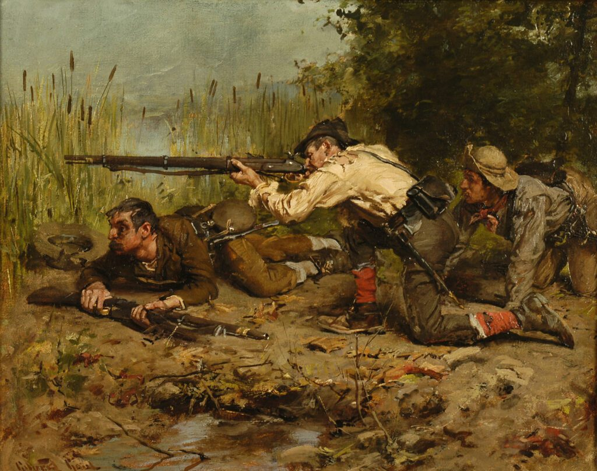

Prose
The Irregulars

Nightriders, so the local populace calls them, come howling and harrowing out of the dusk bent on and dedicated to vengeance and bloodshed. The blackguards. That is what they would be better known as and the most befitting epithet I can bestow upon them in the public pages of this newspaper.
—Editorial, Louisville Daily Union Press, April 4, 1865
While the days burned longer that spring the horsemen galloped what roads there were through LaRue County. A man, grizzled down to the well of his throat, blinked against the tongues of flame lapping over the first shingles of his roof.
“What’d you go and burn my goddamn house down for?”
“Cause it wasn’t yours,” Corse said. “It’s his. He was born in it. But no more.”
“I told you and told you I built the goddamn thing myself when I come into this country. In thirty-eight. Came from Virginia across the goddamn mountains in a snow storm. Me and my brother. That’s him out there begraved under that stone. Like I said you can go look your own damned self if you got eyes to see. Blasted idjits. There wasn’t no cabin in this draw till I raised this one in the summer of thirty-eight, goddamnit. My house. Only one I got.”
Armitage walked out over the moss in the flickering night. He knelt stiffly.
“Robert somebody. Hard to know in this light. Looks like it was etched with a nail. Left this earth, Mar 4th? Eighteen-thirty-something. God keep his soul maybe.”
Rufus laughed. “Looks like God’s the only one kep it then.”
Corse limped around the man who mirrored the conflagration in each eye like the flames quickening inside the two front windows of the cabin. “Do you know where it is?”
“What?” the old man croaked. “His soul?”
“Goddamn his soul, no. The cabin.”
“Why would I know? I only needed the one till you burnt it down. Bastards. Cowards.”
“Sherman showed us how to do it.”
“Well get on across the river then. Sherman’s from Ohio. We got nothing to do with him in Kentucky.”
“So this aint it?” Rufus said.
“Looks like not.” Armitage took off the remains of his hat and cuffed his brow and hung his hat on again. “Death is often proof sufficient of many a proposition.”
“At least we got us some ham out of it,” Rufus said. “What we going to do now, captain?”
Corse lifted his torch like a club of fire that would light their way ahead.
“Burn em all,” he said, “till we get the right one.”
* * *
In the morning the captain drew his plan in sand and divided his command into three. One detachment rode roughly east, one west, and he and Armitage and the boy would range north towards the river. By such scattershot method they would cover more ground, ignite more logs.
“We’re splitting our force in the face of superior numbers,” Rufus chirruped. “Just like General Lee.”
Before evening they spied a man walking their road and when the traveler glanced over his shoulder he hurried his pace and after a second surreptitious glance he dashed for the woods. They caught him stumbling among sweet gum and poplar until he fell rustling into ages of leaffall past. Squinting up at the mounted circle of them he backed his spectacles along his nose.
“Lookuh them fine britches,” Rufus said.
“What you doing on the road?” Corse said.
“Just walking.”
“Walking where?”
“To the Walters place.”
“What’s at the Walters place?”
“Imogene. Imogene Walters. Their daughter.”
“Woohoo,” Armitage whooped. “We got us a Lothario here. A veritable Casanova of the backwoods. Don Juan in striped trousers.”
“Why’d you run when you saw us?”
“I didn’t know who you were. Lots of riders round here these days. You don’t know what they’re after.”
Corse sat with wrists crossed, crossed reins, lips pursed at the man down there still sprawled in heaps of autumns long gone.
“Let me see your hands.”
“What for?”
“Just show em up here.”
Rufus leaned so his saddle creaked. “Pretty enough to be a spy’s hands don’t yall think. One of them silky yankee spies that sneaks into parlors and drinks that whiskey with the quality so he can listen in on secrets.”
“You from around here?” Corse wanted to know.
“Yeah,” the young man said. “Unfortunately.”
“How many tits does a goat have?”
“What?”
“How many tits does a nanny goat have?”
“Teats?”
“Teats. Tits. How many?”
“I don’t know.”
“You never seen a nanny before?”
“I reckon I have but I never thought to stop and ask her how many tits she had. Teats.”
Rufus said, “I knowed he’s a yankee. Damned yankee spy. Lookuh them fancy pants.”
“We’ll find out soon enough. How many tits does a cow have?”
“Four?” He scratched at his neck. “I don’t know.”
“You never milked?”
“I guess not.”
“What about a bitch dog?”
“Goddamnit I don’t know. I aint never shoved a litter aside to suck a dog’s tit before.”
“I wonder if he knows,” Armitage said, “how many Imogene Walters has.”
“Likely not,” Rufus said. “Pale thing like that.”
Corse spat off his mount and drew his sleeve across his chin. “Shoot him.”
“Shoot him?” The young man stumbled in rising and tripped over a rotten bough. “Wait a minute now, why are you going to shoot me?”
Corse cocked his Colt.
“You know of any cabins hereabout?”
“Cabins?”
“Log cabins.”
“I don’t know nothing about any cabins.”
“You better gain some knowledge quick then.”
The young man knocked away a sweet gum ball that had spiked his palm. A trembling finger poked his spectacles higher on his nose again.
“Well about a mile further on, I guess, way you’re going, you’ll come to a track leads off to the right. Might be a old cabin back there.”
“What makes you think that?”
The young man shrugged up his thin shoulders.
“It’s a old trail. Must lead somewhere.”
Rufus said, “You want me to shoot him now, captain?”
“Fellas,” Armitage said, “fellas. Whyn’t we let him get on to his Imogene. Maybe she can scrub his trousers for him. They may need it.”
They went on down the road and found the track and snaked along it until near sunset when Rufus said, “Well lookuh there. The fancy man was right.”
“It’s hardly even a hut,” Armitage said. “Would give an outhouse a bad name.”
“Torch it anyway.”
“What if we slept in the lee of it tonight out of this wind?”
“Burn it now and we won’t have to build a fire,” Corse said.
They bedded down by the pyre of its ruin as best their mangy blanket rolls allowed and Armitage pulled what was left of his leather brim against the glare of flames.
“Test me,” Rufus said.
“In the morning. While we’re riding.”
“Go on do it now. It’ll help me sleep.”
Armitage sighed. “Mouse.”
“Shit. Why do you always have to start with the hardest one?”
“Make a guess.”
The boy flexed his freckles and pressed his lips to disappearing.
“Well I know a cat has eight. But I don’t know about a mouse. Eight?”
“Ten. Rat?”
“Ten?”
“Twelve.”
“Goddamnit. I aint never gone learn this. Some dogs got eight dugs and some got ten. How’s a fella’s head supposed to keep it all straight to catch a yankee out? Why don’t they all just have six and be done with it?”
“I guess your old dad would like to picture your ma with six tits.”
“Are you calling my ma some kind a animal?”
“Naw, your dad. But if they all had six how would you catch a yankee out?”
“I guess you got me there.”
“Here’s one that’ll trap em every time. I know you eat possum.”
“Hell. I been hunting possum since I could tote my grandaddy’s flintlock. I eat plenty a possum in my time.”
“How many’s a possum got then?”
“Hell, that’s a good one. I never thought to count.”
“Thirteen.”
“Thirteen? You being square with me, Armitage?”
“Yeah.”
“Well I be dog. If that aint odd.”
“Hear that, Corse? Boy’s catching on.”
Corse didn’t answer from under the tent of his elbow except to say that first light Rufus was to ride back and untie the man if he could find the right poplar.
“You heard the captain. Now pull your goddamn hat down. Your brilliance is shining too bright for me to sleep.”
“I been wondering something. Don’t some yankees work farms? How we going to sneak up on them?”
Corse said they had plenty other ways of bushwhacking yankees.
* * *
The yellow light spangled horses and horsemen alike, the man on his knees and the woman shivering under his arm and the four haunt-eyed children in their shadow, the littlest hiding her face in both hands.
“I don’t see how it could be,” the man said. “It aint moren ten or twelve years old. Look at the bark on the logs. I bought it planting time two springs ago.”
The tall man with the eye patch stirruped the boot without a heel and heaved himself into the saddle, jerked his chin at the one under the ruined hat and the boy sporting copper hair under his kepi, jerked his reins. With their forage of two hens scrapping in a sack the three of them were out of sight down the bend long before the roof caved in.
* * *
“Armitage, you aint worth a goober,” Rufus cackled. He tossed the drumstick and swiped his slick fingers down his sack coat. Corse rode before them at a walk, head on its rigid spine scouting both sides, forenoon beginning to pale the sky. Armitage drew a breath on the morning and tried again.
“Don’t you ever ask yourself, Rufus, why we’re out here in God’s green world?”
“To burn his cabin to the ground.”
“That’s our mission but is it our purpose. Think about this. Won’t that cabin collapse without any intervention on our part? Every structure’s bound to fall at some point. Every man’s going to die. Revenge is by its very nature only going to bring a very little nearer the inevitable end. It’s a fool’s errand, revenge is. Let the universe take its course and wreak it for you. While you elect virtue rather than vengeance.”
“I kinda like it out here with yall,” the boy said. “The country don’t come up to home in my eyes but it’s a good time sleeping out, foraging. Pulling this gun, seeing folks’s knees knock while they go cross-eyed like a polecat smelling itself. Mama wouldn’t let me do such as that back home.”
“What the sergeant leaves out,” Corse said to the rutted road ahead of them, “is retribution. In the world he describes there would be no justice. In our world vengeance is a necessary virtue.”
“Let’s consider the captain’s objection, his reservation. In several lights. In an imperfect world the best we could ever hope to achieve would be an approximation of justice. Will you grant me that? Our human justice is likely to be so flawed as to render impossible the very idea of the double-pan balance reaching equipoise. Our very faith anticipates this shortcoming doesn’t it? Vengeance is mine, sayeth the Lord. Surely no one reared in the buckle of the Bible belt could be unfamiliar with such a sentiment?”
“My preacher many the time said from the pulpit we should look upon ourselves as the instrument of the Lord. I’d say that’s what I’m doing out here, being a instrument sure enough.”
“But how can you be assured of that, Rufus? Shouldn’t we know to a certainty the rightness of our actions before we set in train a cascade of unforeseeable consequences? Men are such fallible creatures, are we not, even our men of the cloth. One Sunday my pastor knocked a wafer from the tray and a great rat scurried by on its oiled haunches and snatched that holy biscuit off the floorboard and ate it directly before the congregation and that pastor swore until the day he died that that rat was a salvaged soul under divine dispensation because he had received the blessed sacrament in that church. Now does that sound like reasonableness to you?”
Corse spat on the road.
“Certainty. What man ever operated in certainty? Are you absolutely certain that rat’s tale Armitage just spun is in fact the true article? Or could he have invented it at just this moment on this road north to beguile us, to divert us from the matter at hand, orders we are sworn to execute to show that no malefactor can escape the long reach of punishment and reprisal both without the long delay of history’s hand.”
“But aren’t we all malefactors? Can we be certain that justice isn’t following us north on this road or waits on us up ahead?”
Rufus concentrated on the cud of his tongue pocketed in his cheek with much the same expression of his gelding heising its tail and fertilizing the rut of the road.
“Well,” he said after a while. “I don’t ratly know the first thing what yall are talking about but I know Armitage could talk the stink off a goddamn turd.”
* * *
As a matter of course they avoided settlements of size but without maps they occasionally happened upon some crossroads hamlet. So they chanced one afternoon upon a man on a verandah who sat reading in a rocking chair. He closed his book at the thud of hooves.
“You boys look rode hard and put up wet.”
“You know of any log cabins hereabout?”
“Cabins? No. Not any fit for habitation. You looking to homestead? You appear to make a fine family.”
“We come to burn em down.”
“Shut up, Rufus.” Corse spat off his horse among the young stalks of the man’s cannas. “We’re looking for one particular cabin.”
“Which one’s that?”
“Lincoln’s cabin.”
“Lincoln? The president?’
“The one he was born in. He aint my president.”
“Why Lincoln’s dead.”
“What?”
“Last week. Shot in the head by some Shakespearean. Anyway, war’s over.”
“War’s over?” Rufus yipped. “You hear that?” He slapped his kepi at Armitage’s shoulder. “War’s over! We won!”
“How long you boys been out? Lee surrendered. Before Lincoln was shot.”
“He never did it. The Army of Northern Virginia wouldn’t never strike its colors.” The boy’s face flushed freckle by freckle, ear to ear. “Bobby Lee never learned the word surrender.”
“Well I guess some of them blue boys taught him how to spell it. They whipped him out of Richmond plum into the mountains. I guess you’re about the last rebs sparring. Most of the rest called it quits.”
“You’re just the goddamnedest liar in all Kentucky,” Rufus sputtered. He brandished a red fist. “I’ll give you a sockdolager sure as hell.”
“Here. I’ll show you.”
The man groaned up out of the rocking chair and came back through the gloom of the door and offered up a roll of newspapers to Corse.
“You can read, I reckon.”
Corse unscrolled and scanned the pages and handed the bundle to Armitage.
“Let me see your hands.”
“What?”
“Both of them.”
The man raised his palms to either side of his glum and hanging face.
“You aiming to shoot me?”
“Not yet. Hold em out here where I can see em. Turn em up.”
“Are the nails black?” Rufus said.
“No.” Corse hawked and spat and the sputum drooled down the shoulder of his mare. “You aint a pressman, are you?”
“I sell dry goods at the store yonder. You can ask anybody around here.”
“You didn’t print these up yourself? To throw folks off the truth?”
“I wouldn’t know how to work a press if it opened its mouth and gave me instructions itself.”
“Well I don’t believe a word you’re saying,” Rufus muttered, “and I sure as hell don’t believe any goddamn abolitionist newspaper.”
“Suit yourself. You might want to keep a weather eye for Union troopers though. They kind of got the run of the place now. Some of em drunk on account of winning the war.”
Corse snatched back the newspapers and tore at them and tore them again and tossed the remnants so they fluttered down like so many shot doves into the dust raised by twelve hooves breaking into a gallop out of town.
* * *
The woods broke into a clearing and Rufus reined up between them and said, “Well aint that cozy now?”
Smoke trickled out the rock chimney. Half the porch roof sagged over one window like a lazy eyelid but the whole contraption tilted on its mudsills among weeds. Corse propped his Sharps on his thigh and hollered, “Hello, the house.”
The door cracked a slit and a double-barreled muzzle peered out followed by a woman in faded calico. Her hair was silver, what wasn’t snooded at the back of her head like an enormous pin cushion. The two pairs of close-set eyes squinted them out all three in turn. Corse had to ask her to repeat what she said since above the spike of her chin she appeared to have no teeth at all in the pit of her mouth. She pointed the chin at him.
“Said what you boys want?”
Corse held up his free hand and scabbarded the rifle.
“I aint seen nobody in butternut since Jeff Davis declared another day of prayer and fasting to hasten on the victory. As if a day of hungry penance was different from any other.” She lowered the barrel. “But you boys are welcome to step in. Or you can sit them horses till the cows come home. Your choice. I’d like it myself if my cows was to show up again but I doubt they will. I got a jug of mash and some johnnycake on the table.”
She left the door ajar. From the porch they could see a judicious fire on the hearth.
Armitage said, “That’s a mighty fine looking blunderbuss you got there.”
“Was my dead brother’s. Got no shells for it though.”
She stood the shotgun in a corner by the back door and set up in bed amid some shuck pillows scranching around her and indicated with her chin the table and its stool before the fire.
She pulled down the snood and fanned out her silver hair over her breasts.
“You got any rainwater for the least one here?” Armitage said. “We’re trying to keep him off the shine long as he’s in our charge.”
“Like hell. Give me that goddamn jug.”
Rufus gurgled a slug and his freckles contracted and his neck whipped his head about left to right.
“He comes by that fiery hair honest, don’t he?”
The pit that was her mouth curled into a sunken smile. Armitage held aloft a bitten square.
“This cornbread will sure stick to a fella’s ribs, mam. Thank you.”
The chin nodded.
“You got any kin about?” Corse wanted to know.
“Nope. Buried em all.”
“So who’d you go to if you needed some help?”
“My maker, I reckon.” She brought a clay vessel to her nether lip and tongued out her snuff and set the vessel back in the windowsill. “I always did like that ginger hair. And lookuh them long striped britches. Whyn’t you come this way so I can see em proper.”
“Can I bring the jug?”
“Darling, you just bring whatever meets your lonesome heart’s desire. Here. Sit you down here.”
With knobbed fingers she smoothed the tattered baskets of the quilt, combed the silver hair.
After a while of their chewing she said, “Whyn’t you boys go move your horses to a better patch of grass. He’ll be out dreckly.”
Armitage sat his horse and knuckled his spine watching Corse limp into the woods. “It’s getting to be the snaky time of year,” he called. “Don’t let anything bite it off now.” He smirked, listened to a ruckus start high above. Sounded like the first shrieks of jays and mockingbirds coming up to a fracas in the budding branches.
After a bit Rufus wandered out onto the porch dragging his coat and wrestling with his galluses and looking dazed from the eyes down. He tried to calm his hair with both hands and dropped his kepi. His lips hung open but didn’t say anything. A smear of snuff dried across his jaw.
“Come on, Romeo,” Armitage said, “if you can still ride. Proud as a cow with ten tits or a sow with twenty.”
Corse came limping out of the trees cradling brush.
“George?”
Corse stuffed the armload under the porch and shambled to his saddle and pulled the blackened club from the leather loop where he hung it.
“We just broke cornbread at the old gal’s rickety table, George. We can’t burn her house down now.”
“I’m sworn to it.”
“She can’t even defend herself.”
“Perhaps her second best fortune of the war.”
“War’s over. You saw that.”
“Not my war.”
“When’s your war ever going to be over, George? Maybe one of the other troops already fired it. You thought of that?”
“Odds are against it. Rufus, go back in yonder and get her out and bring some coals from the hearth.”
None of them spied the muzzle glaring round the far corner of the cabin before the Damascus steel swung up for a blast that raked Armitage from the saddle. The boy with his boots on different steps of the porch frisked himself and discovered what he wanted in his holster and aimed through the blast so the old woman toppled over her heels, an argent halo flaring round her little head while the boy wavered in the aftermath of the second barrel and tripped down the last step and tumbled into the raspy weeds.
Corse’s features appeared between Armitage and the sky, brow, nose, jawbone, all heavy as if knocked from granite in a hurry while the enemy surprised their bivouac one dawn before reveille.
“That smarts right much,” Armitage laughed. A wince shut the laugh. “And she said she didn’t have any shells. Crazy old gal. How we’d let her outflank us?”
The solitary eye above him shifted unblinking back and forth from one of his pupils to the other.
“Can you ride?”
“Between you and me I don’t remember coming off the horse. Where’d he run to?”
He tried with his wrist to catch something running and blurring his vision. Corse put into his hand a neckerchief that smelled of acrid sweat.
“How’s the least one?”
“Feeling less pain than you. Let’s get you up.”
“I don’t know, George. I think this is about as far as my war goes.”
Standing he could survey where the shot had peppered him, where the blood leaked through the shirt and the trousers at his thigh and the back of his right hand and his arm. He had to swipe at his eye to see the boy’s shirt ragged at his chest before the eye filled up black again.
“Looks like both sides got the worst of the fight today.”
Corse pulled him around the boy and onto the porch and Armitage waited while the captain kindled his torch from the hearth. Corse kicked the rotten railing down and chucked to his mare so she sidled up to the porch and Corse mounted and Armitage flung his good leg over the saddle with a groan broken to jagged pieces. Corse leaned and fired the brush and down the wall shattered a glazed pane with the torch and flung it on the rumpled quilt.
“Where we going?”
Armitage couldn’t tell if the captain answered “On” or “Home.” He woke once while they were down in a swale of darkening woods, the only light the glow of some yellow clumps, daffodils maybe. Winding through boles like pillars holding up the violet vault of heaven the mare put her off front hoof through soft ground into a spring below and tossed them both.
“My God,” Armitage gasped. “My God.”
The mare was screaming and knocking her head against the ground and kept screaming until Corse pinned her headstall to the moss and pulled the Colt and put a bullet behind her left eye.
“Armitage?”
The captain finally got the soldier hoisted and lurched onward under the uncertain weight, a double-headed creature with both faces masked for tragedy, half blind, half halt while the weak April sun winked out over a ridge. The man’s blood seeped through to his spine, wet and warm before it chilled.
////
Thomas McConnell’s short stories have appeared in The Greensboro Review, The Southeast Review, Shenandoah, The Connecticut Review, Yemassee, and The Cortland Review, among other places. A Picture Book of Hell and Other Landscapes, his collection of stories, was published by Texas Tech University Press and nominated for the PEN/Bingham Fellowship and the John Gardner Award for Fiction.